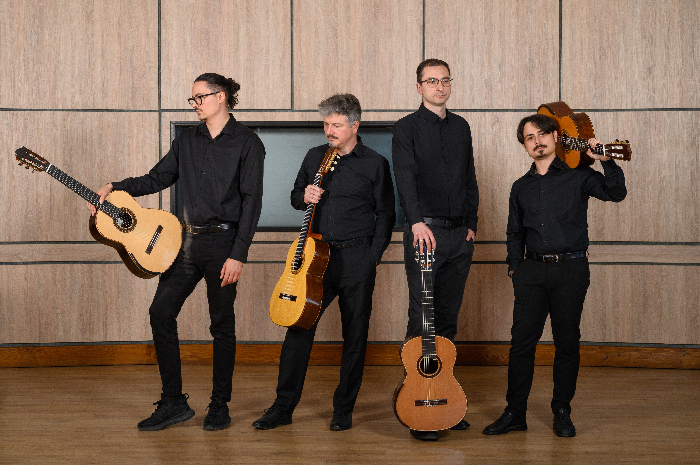

Turneu Național · 2026
ANOTIMPURI
Romanian Guitar Quartet
Patru chitariști virtuozi reimaginează Cele Patru Anotimpuri de Vivaldi într-un periplu estival prin cele mai frumoase edificii de patrimoniu din România.
O reimaginare îndrăzneață
Cum ar fi dacă 4 chitariști ar reimagina și reinterpreta cele 4 Anotimpuri de Vivaldi într-o formulă nouă, neobișnuită? O premieră absolută în spațiul muzical românesc, într-un periplu estival prin câteva dintre cele mai frumoase edificii arhitectonice din țară.
Anotimpurile
Asemenea lucrărilor lui Vivaldi, anotimpurile au lăsat în zidurile străvechi ecouri proprii.
La Primavera
Triluri limpezi de păsări, primăveri abia născute.
L'Estate
Căldură apăsătoare, furtuni violente, cântul cucului.
L'Autunno
Recolta, dans și vin, vânătoarea în pădurile aprinse de culoare.
L'Inverno
Pași nesiguri pe gheață, vânturi aspre, focul din sobă.
Traseul turneului
De la repere emblematice la locuri mai puțin cunoscute, fiecare concert este o întâlnire cu istoria.
Intrarea la concerte este liberă, în limita locurilor disponibile (cu excepția celor notate mai sus). În anumite biserici fortificate, se va plăti taxa de acces/vizitare a edificiului.
Romanian Guitar Quartet
Un cvartet nou-înființat, reunind patru dintre cei mai apreciați chitariști români.

Dragoș Ilie
Cel mai titrat și apreciat tânăr chitarist român, cu premii la cele mai importante concursuri chitaristice la nivel internațional. Partener de duo al violonistului Alexandru Tomescu.
Costin Soare
Unul dintre cei mai apreciați și activi muzicieni români, cu 15 turnee naționale și internaționale la activ, 4 CD-uri în portofoliu. A colaborat cu nume importante ale scenei muzicale autohtone.
Dan Alexandru Arhire
Chitarist și cadru universitar ieșean, cu multiple apariții solistice pe scenele Filarmonicilor din țară și autor a două materiale discografice.
Ioan Bănescu
Recent nominalizat la categoria „Interpretul anului" în cadrul Galei UCIMR. Chitarist de forță cu o activitate intensă atât în zona solistică, cât și în cea camerală.
Patru compozitori, patru spații
Patru tineri compozitori, selectați printr-un apel național, creează câte o lucrare pentru cvartet de chitare și bandă, fiecare inspirată de unul dintre spațiile turneului.
În paralel, doi tineri cineaști vor realiza o serie de documentare dedicate acestor patru spații, creând o punte între muzică, imagine și arhitectură.
O punte între timpuri
Călătoria inițiată de cei 4 chitariști creează o punte între timpuri, unde culorile calde ale sunetelor freamătă între zidurile străvechi, iar spațiile prind viață în ritmul anotimpurilor.
Organizator
Asociația Culturală KITHARALOGOS

Parteneri
Festivalul și Academia Icon Arts Transilvania · Asociația UCIMR (Uniunea de Creație Interpretativă a Muzicienilor din România) · Muzeul Național Peleș · Muzeul Național Brukenthal · Biserica Evanghelică Sf. Margareta, Mediaș · Asociația Contrafort · Casa de Cultură, Rădăuți · Sinagoga Mare, Rădăuți · Asociația Klavier Art · Centrul Muzeal „Cazinoul Băilor", Vatra Dornei · Complexul Național Muzeal „Moldova", Iași · Asociația Grafoart

Cu sprijinul
Tecnoservice Equipment SRL · Savvy Finance · Ansett Logistics · D'Addario · Oculooptic SRL

Parteneri media
TVR Cultural · TVR Iași · Radio România Muzical · Radio România Cultural · Radio România Iași · Radio România Brașov · RFI România · Radio Trinitas · Radio Clasic · Agenția de Carte.ro · Liternet.ro · BookHub.ro · Eveniment FM Sibiu · Sweet FM · Monitorul de Suceava · Cromtel TV · Radautiziar.ro · Viva FM · România Pozitivă

Finanțator
Administrația Fondului Cultural Național

Proiectul nu reprezintă în mod necesar poziția Administrației Fondului Cultural Național. AFCN nu este responsabilă de conținutul proiectului sau de modul în care rezultatele proiectului pot fi folosite. Acestea sunt în întregime responsabilitatea beneficiarului finanțării.